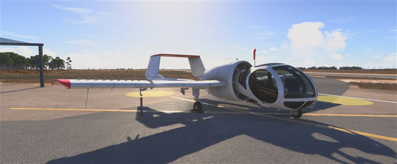
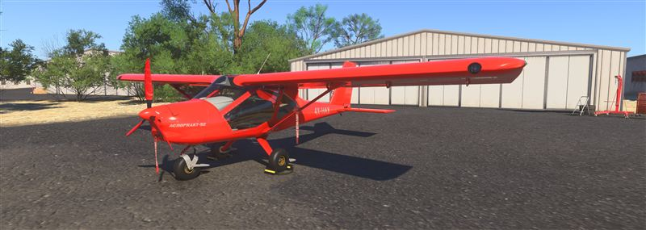
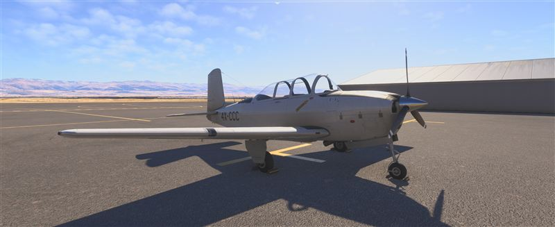
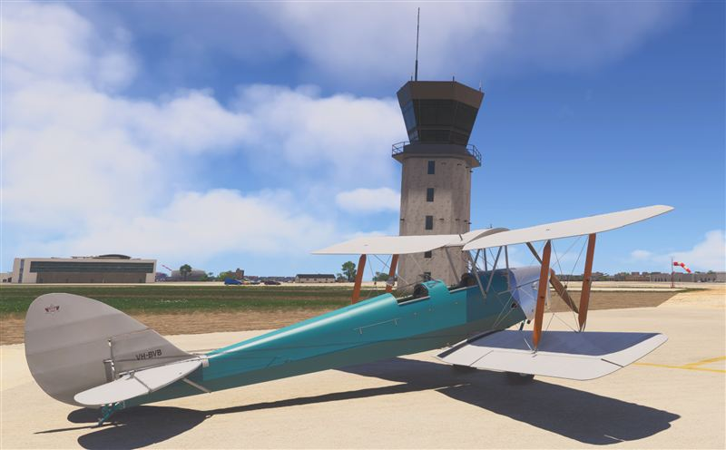

המטוסים · Aircraft

איירו־אלווירה אופטיקה
AeroElvira Optica OA-7
MSFS 2024 · Got Friends / Microsoft AeroElvira Optica

איירופראקט A-32 ויקסן
Aeroprakt A-32 Vixxen Explorer
MSFS 2024 · Got Friends Aeroprakt A-32 Vixxen

ביצ׳קראפט T-34B מנטור
Beechcraft T-34B Mentor
MSFS 2024 · Carenado T-34B Mentor

דה־הווילנד טייגר מות׳
de Havilland DH.82A Tiger Moth
MSFS 2024 · Ant’s Airplanes Tiger Moth DH.82A
דיימונד DA42 VI Twin Star
Diamond DA42 VI Twin Star — Austro AE300
MSFS 2024 · COWS DA42 VI
מה יש בכל ערכה
- תכונות המטוס וההבדלים העיקריים לעומת הססנה 172: מערכות, טיפול בטיסה וניהול מנוע.
- טבלאות השוואה וביצועים מול הססנה 172.
- בד״ח לכל שלבי הטיסה הרגילים, מההנעה ועד הכיבוי.
- נהלי חירום נבחרים.
כל מדריך מתייחס למודול סימולטור מסוים, המופיע בכותרתו. גרסאות מודול וציוד אופציונלי עשויים לשנות חיוויים, נהלים וביצועים.
What's in each kit
- Aircraft characteristics and the key differences from the Cessna 172: systems, handling and engine management.
- Comparison and performance tables against the Cessna 172.
- Checklists for every normal flight phase, from engine start to shutdown.
- Selected emergency procedures.
Each guide targets the specific simulator module named in its title. Module versions and optional equipment can change indications, procedures and performance. The guides are written in Hebrew.
לשימוש בסימולטור בלבד — לא לתעופה אמיתית, לתכנון טיסות אמיתי או להדרכת טיסה.
For simulated flight only — not for real-world aircraft, flight planning or flight instruction.